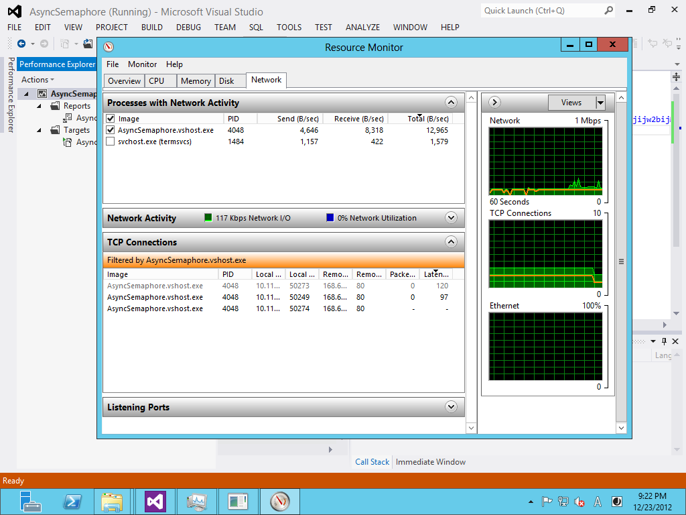
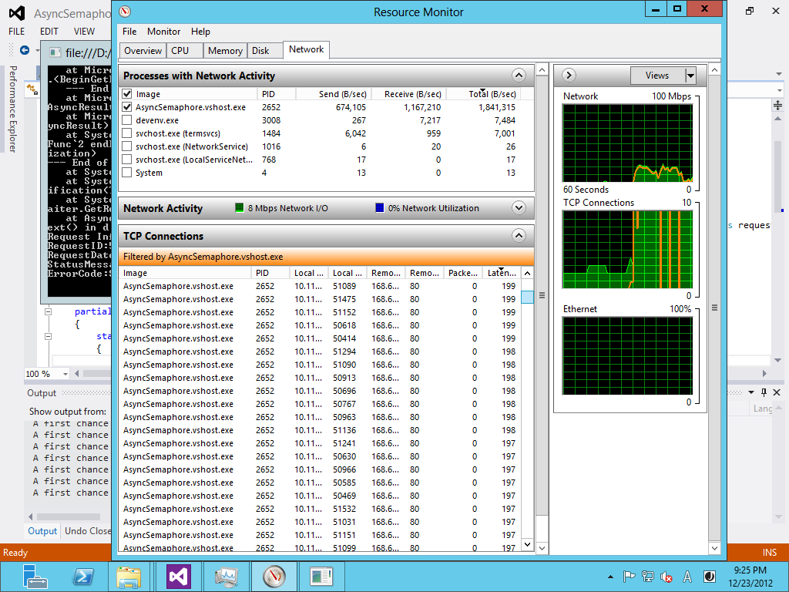
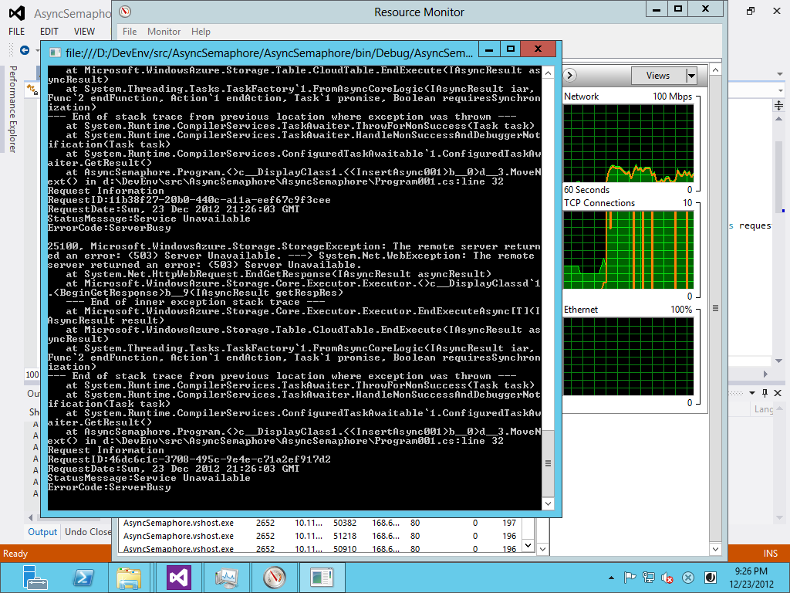

Azure Storage Client 2.0 CompletedSynchronously FIX
以前の記事 Azure Storage Gen 2は速かった の補足です。その中の 非同期で同時接続数が上がらない？ で、
このコードを動かしてみたら、「単一スレッド＋非同期の組み合わせだと、おおよそ２から３程度のコネクションしか作成されない」ことに気が付きました。場合によっては、5ぐらいまで上がることもあるようですが、どうしてこうなるのか不思議です。 これは、Azure Storage Client 2.0のBUG だったようです。2.0.2で修正されています。
と書きました、結局執筆時点でのAzure Storage Client 2.0.1にはBUGがあり、後日2.0.2で修正されたことが分かりました。少々混乱したのでここに顛末をまとめます。

BUGの内容
BUGの内容としては、非同期メソッドが返すIAsyncResultオブジェクトのCompletedSynchronouslyプロパティが一貫性の無い値になっていて、その結果、TaskFactory.FromAsyncが正しく動作しないというものでした。
再現試験
まずは、2.0.1での問題の再現性の確認し、2.0.3で解決されているのかを検証します。コードは[前の記事] (Azure Storage Gen 2は速かった) とほとんど同じですが、なるべく簡略化したものにしています。
まずは、APM (Asynchronous Programming Model)パターンの非同期メソッドをTask.FromAsync()でラップしてExecuteAsyncメソッドを作ります。今回問題となっているのは、CloudTable.BeginExecute から、AsyncCallback を呼び出すときに渡すIAsyncResultオブジェクトのCompletedSynchronouslyプロパティです。ちょと問題があるような気がしますが、今回はこれで行きます。
このExecuteAsyncを使って指定回ループしてテーブルにエンティティをInsertします。
このコードは、Insertの数だけ、Taskが生成されて全部まとめてWaitしています。これを、.NET 4.0でやるとTask毎にWait Handleを確保するので非常に効率が悪いですが、.NET 4.5では、Waitの数しかリソースを使わないので、そんなに悪くありません。それでも件数に応じて使用メモリーが増えるので本番で使うのはあまりお勧めできないコーディングパターンです。
.NET 4.5のTask回りの変更については、このBlogの記事「C#たんっ！ 新機能が入るまで 」から読み始めるのがお勧めです、必要な部分へのリンクが張られています。
2.0.1 で動かす
このコードを、Azure Storage Client 2.0.1 で動かしてみます。ライブラリのバージョンを指定するには、nugetを使うと便利です。もし、すでにAzure Storage Client が入っていたら下記のように削除してからバージョンを指定して入れ直します。
> Uninstall-Package WindowsAzure.Storage –RemoveDependencies
> Install-Package WindowsAzure.Storage -Version 2.0.1
これで動かします。非同期メソッドが本当に非同期で動いているかどうかの確認はUIならUI Threadがブロックされていているかどうかなどで分かり易いのですが、サーバーサイドのプログラム（今回コンソールですが）ではちょっと見には分かりません。このコードはAzure Storageとの間でSocketを張っているのでTCP/IP接続の数を見ることで並列度が分かります。また、ネットワーク転送速度（Send）も参考になります。
Azure Storage Client 2.0.1 時のResource Moniter画面
見事に接続数が伸びません。
2.0.3では？
これを、2.0.3 でビルドし直します。2012/12/24現在の最新が2.0.3でバージョン指定しないと最新版が落ちてきます。
> Uninstall-Package WindowsAzure.Storage –RemoveDependencies
> Install-Package WindowsAzure.Storage
Azure Storage Client 2.0.3 時のResource Moniter画面
結論
劇的にコネクション数が変わります。画面だとコネクションの数ははっきりとわかりませんが、 2.0.1 の時の画面と全く違っているのがわかると思います。数を数えると開始直後に1000接続以上が作成されます。これで、2.0.1の実装には問題があり、非同期メソッドを使ってもほとんど非同期に実行されてなかったこと、それが、2.0.3では修正されていることが確認できました。
ちなみに、今回確認はしていませんが、以前に1.4のAzure Storage Clientを試した時には非同期メソッドで同時接続数が少なくて困るという問題は無ありませんでした、2.0で発生したBUGで2.0.2でFIXということのようです。
次の問題
万事解決、良かった良かったと言いたいところですが別の問題が起きます。並列度があがったのは良いのですが、コネクションを張りすぎてExceptionが大量に発生します。
Azure Storage Client 2.0.3 時でのException
何らかの方法で、並列度を制限しないと実用的ではありません。特にバッチの中で非同期呼び出しを使う場合などはこれは致命的です。
ここでは、Blob でのUpload処理が参考になります。 Windows Azure Storage 2.0 の Blob Upload で参照している処理を見ると、Semaphoreを使って非同期処理には入れる数を制御していますので、これを参考にします。
Semaphoreを使う
上記の処理方法に習って、Semaphoreを使って同時実行数を制御します。SemaphoreSlim という便利がものがあるのでそれを使います。 こうすることで、同時実行数を制御することがでます。とりあえず100で制限します。これで普通に動きます。
まとめ
- Azure Storage Client 2.0 は、2.0.2で非同期周りのBUGが直っている。
- 非同期呼び出しをループ内で使うと過剰にリソースを消費することがある。
- 同時実行数を制御するにはSemaphoreを使うと制限できる。